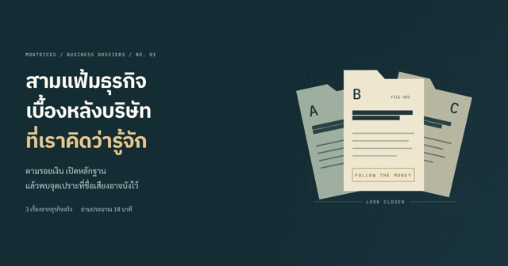
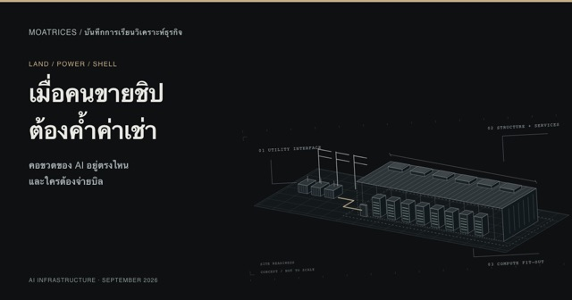
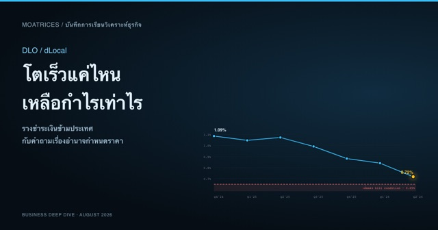

เจาะแก่นธุรกิจ
หาคูเมืองที่แท้จริง
4 ชั้นบนเปลี่ยนเร็วเกินกว่าจะถือ 10 ปี — เว็บนี้ขุดลงชั้นล่างสุด
ที่นี่ไม่ใช่ที่บอกว่า "ซื้อตัวไหนดี" แต่เป็นที่ผมหัดอ่านธุรกิจให้เป็น ทีละบริษัท ทีละงบ ด้วยกรอบคิดสาย Fundamental — moat, Owner Earnings, ROIC และที่สำคัญที่สุดคือ "อะไรจะทำให้ผมรู้ว่าคิดผิด" (Kill Conditions) ทุกบทเขียนแบบเปิดเผยกระบวนการคิด ผิดถูกว่ากันตามหลักฐาน
01ต้องอ่าน
 หุ้นเด่น · SNPS
ผ่าธุรกิจ SNPS (Synopsys) — EDA duopoly,
ดีล Ansys $35B และความหวัง Physical AI
ธุรกิจดีกลางเดิมพันใหญ่ — ตามเงิน ฿100 เดินทางผ่านงบ,
ดีเบต 3 ยกของตลาด และแผงมอนิเตอร์ 5 สัญญาณว่า thesis ห่างเส้นแดงแค่ไหน
อ่านต่อ →
หุ้นเด่น · SNPS
ผ่าธุรกิจ SNPS (Synopsys) — EDA duopoly,
ดีล Ansys $35B และความหวัง Physical AI
ธุรกิจดีกลางเดิมพันใหญ่ — ตามเงิน ฿100 เดินทางผ่านงบ,
ดีเบต 3 ยกของตลาด และแผงมอนิเตอร์ 5 สัญญาณว่า thesis ห่างเส้นแดงแค่ไหน
อ่านต่อ →
 บทความเด่น · AI Bubble
AI = ฟองสบู่ dot-com รอบใหม่? —
ผ่ากลไกด้วยมีดผ่าตัดเล่มเดิม
ฟองสบู่คือตอนที่ราคากลายเป็นตัวอ้างอิงของตัวเอง —
วงจรเงินหมุน Nvidia→hyperscaler→AI cloud และ "ดอกจันโหดร้าย":
ต่อให้ thesis ถูก คนถือจะรอดไหม
อ่านต่อ →
อีบุ๊กใหม่ · ฟรี
Buffett × Munger —
เส้นทางตัดสินใจของนักลงทุน (รวมเล่ม PDF 80 หน้า)
สุนทรพจน์และเลกเชอร์ 12 ชิ้นที่นักลงทุนทั้งโลกส่งต่อกัน
เรียบเรียงใหม่เป็น 5 ภาคตามเส้นทางตัดสินใจ — ภาพประกอบใหม่ทุกบท
อ่านออฟไลน์หรือส่งต่อให้เพื่อนได้เลย
ดาวน์โหลด PDF ฟรี →
บทความเด่น · AI Bubble
AI = ฟองสบู่ dot-com รอบใหม่? —
ผ่ากลไกด้วยมีดผ่าตัดเล่มเดิม
ฟองสบู่คือตอนที่ราคากลายเป็นตัวอ้างอิงของตัวเอง —
วงจรเงินหมุน Nvidia→hyperscaler→AI cloud และ "ดอกจันโหดร้าย":
ต่อให้ thesis ถูก คนถือจะรอดไหม
อ่านต่อ →
อีบุ๊กใหม่ · ฟรี
Buffett × Munger —
เส้นทางตัดสินใจของนักลงทุน (รวมเล่ม PDF 80 หน้า)
สุนทรพจน์และเลกเชอร์ 12 ชิ้นที่นักลงทุนทั้งโลกส่งต่อกัน
เรียบเรียงใหม่เป็น 5 ภาคตามเส้นทางตัดสินใจ — ภาพประกอบใหม่ทุกบท
อ่านออฟไลน์หรือส่งต่อให้เพื่อนได้เลย
ดาวน์โหลด PDF ฟรี →
02ซีรีส์
03Interactive
04บทความล่าสุด
-
Tesla Robotaxi — รถเริ่มวิ่งแล้ว คูเมืองเริ่มเกิดหรือยัง?
รถไร้พวงมาลัยเริ่มรับผู้โดยสารแล้ว แต่คูเมืองเกิดหรือยัง? สำรวจ Cybercab แบบ 3D แล้วลองเปลี่ยนการวิ่งเปล่าให้เป็นเงิน ผ่าน 5 ฉาก Interactive
อ่านต่อ → -
สามแฟ้มธุรกิจ — เบื้องหลังบริษัทที่เราคิดว่ารู้จัก
ร้านที่ขายถูก บริการที่เก็บเงินรายเดือน และเครื่องจักรที่ทำแทนยาก — ตามรอยหลักฐานในสามแฟ้ม แล้วพบว่าข้อดีของธุรกิจซ่อนจุดเปราะอะไรไว้

อ่านต่อ → -
เมื่อคนขายชิปต้องค้ำค่าเช่า — Land, Power & Shell
ก่อนนับ GPU ให้นับเงื่อนไขที่ขาดอยู่ — ที่ดิน อาคาร และไฟฟ้าจะกลายเป็นผลตอบแทนได้เมื่อไร และใครต้องจ่ายบิลหากผู้เช่าไปต่อไม่ไหว พร้อมภาพโครงสร้างพื้นฐานและตัวทดลองที่เล่นได้ในบทความ

อ่านต่อ → -
ผ่าธุรกิจ DLO (dLocal) — TPV โต 92% แต่ take rate ร่วง 7 ไตรมาสติด
TPV โต 92% เร็วที่สุดในรอบ 4 ปี แต่ take rate ร่วง 6 ใน 7 ไตรมาส — ผ่าว่า moat ใบอนุญาตใน 40+ ประเทศเป็นของจริงไหม ทำไมมันไม่แปลงเป็นอำนาจกำหนดราคา และตอนนี้ห่างเส้นแดง 0.65% แค่ 7 bps

อ่านต่อ → -
ซีรีส์: เคสศึกษา · ตอนใหม่เคสศึกษา 1: Domino's — บริษัทที่ออกทีวียอมรับว่าพิซซ่าตัวเองห่วย แล้วหุ้นขึ้น 116 เด้ง
 DPZ
~22 นาที
DPZ
~22 นาที
ราคาปิดต่ำสุด $2.83 ในปี 2008 → $328.92 วันนี้ คือ 116 เด้ง แต่คนที่คิดว่าชนะเพราะเปลี่ยนสูตรพิซซ่า กำลังอ่านเคสนี้ผิด — ตัวจริงคือนาฬิกา การซอยเขตส่ง และหนี้ก้อนโตที่ซื้อหุ้นคืนจนหุ้นหายไป 40%
 อ่านต่อ →
อ่านต่อ →
-
Interstellar สอนอะไรนักลงทุนระยะยาว
หลุมดำมาทำอะไรบนเว็บหุ้น? เพราะเกมของนักลงทุนระยะยาวคือเกมเดียวกับ Interstellar: ใช้เวลาให้เป็น, รู้ว่าเส้นไหนข้ามแล้วไม่มีทางกลับ, และเลิกฝืนหมุนสวนสถานี — สามฉากฟิสิกส์เล่นได้จริงในบทความ
 อ่านต่อ →
อ่านต่อ →